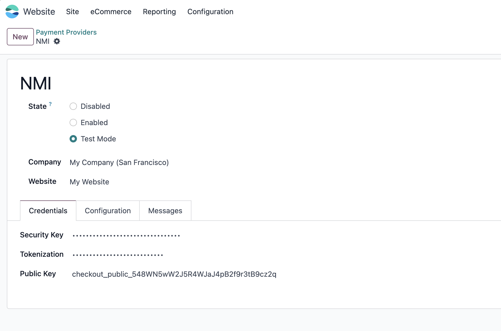

NMI支付
NMI是一家支付服务提供商和支付网关，在美国和英国设有办事处，为英国、美国和加拿大的银行和处理商提供信用卡授权和结算服务。本文将介绍如何使用odoo来开启NMI支付。
启用NMI支付
首先，我们需要在应用模块中安装NMI支付：

设置NMI支付
在网站-设置-支付提供商中选择NMI支付，填写需要使用的NMI支付参数：

- SecurityKey: 在NMI商家门户后台设置获取到的私钥。
- Tokenization: 使用Collect.js的Tokenization类型的Token。
- Public Key: Collect Checkout类型的Public Key。
在商城中使用NMI支付
NMI参数设置之后，就可以在商城中使用NMI支付了。在结算页面，选择NMI支付，然后输入卡号、有效期和CVV，点击支付即可完成支付。


完成支付后，就可以跟其他订单一样处理了。